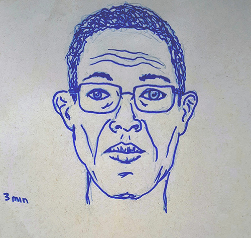

DESENHAR COM O CORPO VIVO
As oficinas propostas pela colabmov propõem uma reflexão sobre sobre os preconceitos e limitações sociais e culturais que envolvem a representação visual do corpo humano e – e, por consequência, em modos de interferir nesta realidade.
"No primeiro dia participei como modelo junto a algumas amigas, algo que nunca pensei que conseguiria fazer. Mesmo que desenhar modelos vivos faça parte do meu cotidiano, não achava que teria coragem de posar sem roupa para um grupo de desconhecidos. Isso fez com que eu enxergasse meu corpo de outro jeito e destruiu barreiras que eu havia criado dentro de mim." (Namie Takahashi)
Muitas pessoas consideram seus corpos inadequados para a representação visual, baseando-se principalmente na comparação de seus próprios corpos com os corpos representados na cultura visual de massa. As Oficinas pretendem construir espaços de experimentação que transformem a relação dos indivíduos com seus próprios corpos em algo mais orgânico e tranquilo
Convidamos os participantes a se revezam posando entre si, criando uma espaço de experimentação onde confirmamos coletivamente a existência da diversidade dos corpos. A nudez é parte integrante do exercício do desenho de observação de modelo vivo; contudo, entendemos que as pessoas têm níveis diferentes de intimidade com o próprio corpo e deixamos o participante livre para experimentar posar completamente vestido, em roupa debaixo ou completamente nu.
Nunca imaginei que teria coragem para posar e ainda mais sem nenhuma roupa. Foi quando a Oficina Colaborativa me deu essa oportunidade atraves de um ambiente respeitador e com muita seriedade. Muito obrigado a todos organizadores pelos ensinamentos tanto como desenhar e como posar. (Neto)
A experiência de se colocar sob o escrutínio dos colegas, seja vestido ou nu, possibilita uma aproximação com as próprias potencialidades e limitações físicas. Esta experiência promove outro modo de pensar e entender o próprio corpo - e também sua produção artística. Ao se ver como artista e modelo, o participante expande seus limites perceptivos e passa a entender sua produção e seu corpo de outra forma.

" Posando percebi que a sensação da passagem do tempo, pelo modelo, é bem mais lenta em relação ao desenhista e que nem tudo que se imagina é possível executar (poses maravilhosas na concepção, mas que esbarram nas limitações físicas). O resultado é que passei a admirar mais o trabalho dos modelos profissionais que conseguem sempre encontrar boas soluções para satisfazer as expectativas dos desenhistas, pintores, escultores... Mas quero destacar que a experiência de posar foi muito agradável. Ficou claro pra mim que tenho boa relação com meu próprio corpo e boa autoestima, pois me senti inteiramente à vontade, mesmo na presença de pessoas que eu não conhecia. Mas é claro que isso só foi possível graças à boa condução dos trabalhos pelas coordenadoras que conseguiram fazer com que o ambiente ficasse confortável para todos, num clima de muito respeito, harmonia e cooperação. (Enivaldo Pires)

O DESAPEGO AO DESENHO
Uma das estratégias principais para guiarmos o participante para o desenho de observação em si é criar estranhamentos, provocando um distanciamento entre os participantes e suas ideias pré concebidas de representação.
Os primeiros desenhos realizados em um encontro da Oficina são guiados por um exercício proposto pelas mediadoras. O maior objetivo ao criar esse primeiro momento de atividade é provocar um distanciamento entre os participantes e suas ideias pré concebidas de representação, que os costumam levar a uma reprodução de esquemas e simplificações gráficas, mantendo-os distantes do exercício de observar. Buscamos formar indivíduos ativos, capazes de absorver os elementos que ele encontra em sua frente e expressá-los de forma autônoma e original.
Desta forma, exercícios como o desenho cego, desenhar com as duas mãos ao mesmo tempo, desenhar com a mão oposta da que se está acostumado, entre outros, são essenciais para a formação de um ambiente de experimentações e pesquisa, onde nos sentimos livres e incentivados a estar novas formas de desenhar; a ruptura com o preciosismo exagerado é essencial para que seja criado novos caminhos.
"A sequência dos trabalhos, partem de minha experiência com a oficina, onde passei a desenvolver um desapego, tanto na construção de uma figura, até a escolha dos materiais que estão fora de minha zona de conforto. Uma preocupação nos desenhos, situaram no gestual do corpo entre as diferentes poses, também à compreensão de sombra e luz." Bruno Alves (@bruno.alves.v)
 "Oficina maravilhosa, tem me ajudado a me soltar muito mais e me desprender da ideia de que o desenho tem que ser "perfeitinho". Também me ajudou me dando liberdade e segurança para posar, coisa que nunca fiz antes. Pena que acaba hoje, espero que retornem logo" (Luana Byrk)
"Oficina maravilhosa, tem me ajudado a me soltar muito mais e me desprender da ideia de que o desenho tem que ser "perfeitinho". Também me ajudou me dando liberdade e segurança para posar, coisa que nunca fiz antes. Pena que acaba hoje, espero que retornem logo" (Luana Byrk)
Frequentemente iniciamos a Oficina com a realização de poses muito curtas, que chamamos de “shots de desenho” (de 20 segundos a 1 minuto) com o objetivo de soltar o traço do participante e libertá-lo da expectativa de perfeição mimética e anatômica. A duração das poses depende da vontade e possibilidade física do participante; contudo, as poses mais longas não passam dos dez minutos, em concordância com a abordagem experimental da Oficina e reiterando o objetivo de soltar o traço do participante.
Na Oficina Colaborativa, o “resultado” a ser alcançado não é o desenho e sim a vivência múltipla.
Fizemos algumas variações sobre o exercício de “poses em movimento”, em uma releitura livre das experiências de Eadweard Muybridge e Marchel Duchamp. O/a modelo pode, lentamente, ir movendo-se pelo espaço da pose, propondo aos participantes o desafio de tentar captar o essencial ao movimento. Outra possibilidade é que o/a modelo mexa-se livremente pelo espaço - como em uma dança- até que um dos participantes identifique uma posição que julgue interessante e comande-o a parar. O/a modelo deve, então, sustentar a posição pelo tempo pré-determinado e depois voltar a sequencia de movimento que estava desenvolvendo.
A solução gráfica para o problema proposto não é intuitiva, de forma que o exercício ajuda a desenvolver a abstração a partir do corpo e a subverter a noção de perfeição realista.
"Algo é certo: o esboço é plasticamente atraente. Sua fragilidade, concisão e proximidade do momento da criação despertam muito interesse. Tudo isso gera o fetiche que sempre envolve esses traços precários de um pensamento em criação e, principalmente, a proximidade da mão, da intimidade do artista. (...) O desenho, em sua natureza precária, mostra o artista tateando o que deseja ou busca. (...). Os esboços são, como vimos, índices do artista em ação, um pensamento visual em movimento. (...) tendo, assim, o poder de nos impor uma reflexão sobre o inacabado." (SALLES in DERDYK, 2007, p.42-44)
ESCALA E PERSPECTIVA
Experimentação em múltiplos formatos
Compreendemos que a experimentação em múltiplos formatos é extremamente enriquecedora para as qualidades que buscamos desenvolvimento ao longo dos nosso encontros: incentivar a capacidade de cada um de lidar com o inesperado, explorando possibilidades para além de sua zona de conforto, estando aberto para novas soluções que elementos diferentes possam sugerir.
Para isso, disponibilizamos em nosso acervo de materiais diversas escalas e diferentes suportes para que os participantes pudessem explorar tais qualidades, além de sugerir exercícios que incentivassem tal prática.

MATERIAIS E MATERIALIDADES

Como o material influencia na forma?
Durante os exercícios, propusemos provocações visando explorar diferentes suportes e materiais, abrindo possibilidades pictóricas para os participantes. Desenho em escalas, desenho em tecido, desenho com material emprestado e sorteio de materiais foram algumas das estratégias apresentadas, incentivando o desenhista a lidar com o imprevisível e inusitado.
Trabalhar diferentes materiais e compreender a relação entre eles, assim como explorar suportes como a folha de papel em branco apresenta um universo rico e desafiador, onde começa-se a perceber relações de cores e texturas de formas mas complexas.
ESPACIALIDADES POSSÍVEIS
Exploração dos diversos ambientes do CCSP
Ao longo da nossa trajetória no CCSP, realizamos oficinas em diferentes locais, sempre abertos ao público. Consideramos característica essencial do nosso trabalho estarmos atentos e permeáveis para as variáveis imprevisíveis, trazendo conosco propostas de exercícios que serão adaptadas de acordo com o decorrer da oficina e as características únicas de cada encontro.
Durante o período em que estivemos no Centro Cultural São Paulo, exploramos diversos locais, como o Jardim Suspenso, a Sala de Ensaio II, o Espaço Oficinas e o Porão do Psicodrama. Cada local trouxe para a oficina elementos distintos, apresentando uma ótima oportunidade para trabalhar o dinamismo, evitando acomodações e propondo novos estímulos.
O chão de desenhos

O chão de desenhos é o momento final da oficina, onde recapitulamos os exercícios do dia e refletimos em conjunto sobre as temáticas abordadas e os resultado
(...) Gostei mto q vcs pedem pras pessoas colocarem os desenhos no final pra todo mundo ver, achei incrível a arte do pessoal. Gostaria q outros lugares que fazem sessões fizessem o mesmo… Continuem o ótimo trabalho e obrigado pelo trabalho de vcs, ajudam muito na nossa formação como artista
A colabmov é um processo mútuo estruturado a partir da vontade coletiva, pensando de forma não-hierárquica e desconstruindo os limites que separam os participantes da equipe de mediação. Essa dinâmica horizontal possibilita que todos possam dar suas contribuições para a construção coletiva do conhecimento. Por isso mesmo, para nós é muito importante o momento de compartilhar a produção coletiva do dia, na forma de um chão forrado de desenhos.